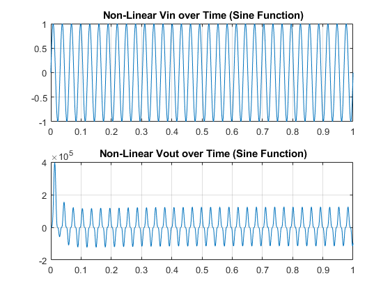
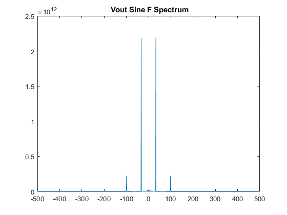
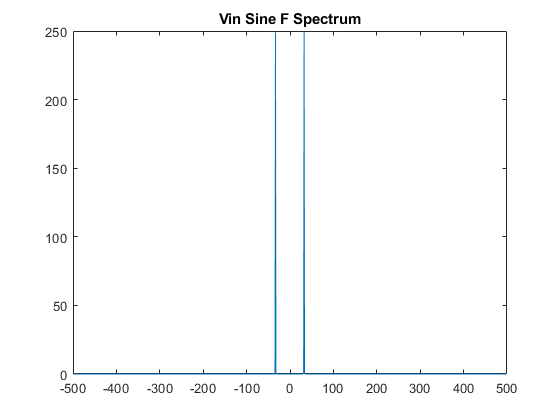

Assignment 4: Part 4: Non-Linear Circuit MNA Analysis
Contents
Introduction
% Firstly, I need to develop the jacobian matrix which will solve for the % nonlinear current controlled voltage generator. Once the jacobian matrix % is defined, the newton ralphson method will be used to solve for the % change in voltage at each iteration of the calculation. The V vector % will be solved again where the output voltage will be estimated. clc G1=1/1; C2=0.25; G2=0.5; L=0.2; G3=0.1; G4=100; G5=1/1000; ALPHA=1000; BETA=100e5; GAMMA=100e8; Vin=10; vx=-10;
G, C, and J Matrix Construction
% X=[V1 Iin V2 V3 V4 V5 IL I4] % G=[-G1,1, G1, 0,0,0,0,0; ... % G1,0, -G1-G2,0,0,0,-1,0;... % 0,0,0,-G3,0,0,1,0;... % 0,0,1,-1,0,0,0,0;... % 0,0,0,0,0,G4,-ALPHA*G4,1;... % 0,0,0,0,0,-G4-G5,ALPHA*G4,0;... % 1,0,0,0,0,0,0,0; % 0,0,0,0,1,0,-ALPHA,0]; %X=[V1 Iin V2 V3 V4 V5 IL I4] G=[-G1,1, G1, 0,0,0,0,0; ... G1,0, -G1-G2,0,0,0,-1,0;... 0,0,0,-G3,0,0,1,0;... 0,0,1,-1,0,0,0,0;... 0,0,0,0,-G4,G4,0,1;...% [0,0,0,0,0,0,G4,-G4*(-alpha*i3-beta*i3^2-gamma*i3^3),1] 0,0,0,0,G4,-G4-G5,0,0;...% [0,0,0,0,-G4-G5, G4*(-alpha*i3-beta*i3^2-gamma*i3^3),0] 1,0,0,0,0,0,0,0; 0,0,0,0,1,0,0,0];% [0,0,0,0,-alpha*i3-beta*i3^2-gamma*i3^3,0,0,0] C = [-C2,0,C2,0,0,0,0,0;... C2,0,-C2,0,0,0,0,0;.... 0,0,0,0,0,0,0,0;... 0,0,0,0,0,0,-L,0;... 0,0,0,0,0,0,0,0;... 0,0,0,0,0,0,0,0;... 0,0,0,0,0,0,0,0;... 0,0,0,0,0,0,0,0]; I3=0; J = [0,0,0,0,0,0,0,0;... 0,0,0,0,0,0,0,0;... 0,0,0,0,0,0,0,0;... 0,0,0,0,0,0,0,0;... 0,0,0,0,0,0,0,0;... 0,0,0,0,0,0,0,0;... 0,0,0,0,0,0,0,0;... 0,0,0,0,0,0, (-ALPHA - 2*BETA*I3 - 3*GAMMA*I3^2), 0]; deltaT=0.001; V = [0; 0; 0; 0; 0; 0; 0; 0]; Vjm=[0; 0; 0; 0; 0; 0; 0; 0]; voutval=zeros(1000,1); vinval2=zeros(1000,1); count=1; time=zeros(1000,1);
Sine Function Input Voltage Signal
vx=@(t) sin(2*pi*33 *t); for t=0:deltaT:1 Fvect=[0 0 0 0 0 0 vx(t) 0]; time(count)=t; dvdf=C/deltaT + G - J; countconvergence=0; while(countconvergence<200) I3= V(7); %current through inductor J = [0,0,0,0,0,0,0,0;... 0,0,0,0,0,0,0,0;... 0,0,0,0,0,0,0,0;... 0,0,0,0,0,0,0,0;... 0,0,0,0,0,0,0,0;... 0,0,0,0,0,0,0,0;... 0,0,0,0,0,0,0,0;... 0,0,0,0,0,0, (-ALPHA - 2*BETA*I3 - 3*GAMMA*I3^2), 0]; B = [ 0 0 0 0 0 0 0 (ALPHA*I3+BETA*I3^2+GAMMA*I3^3)]; f=(C/deltaT+G) * V - (C/deltaT)*Vjm - Fvect' - B'; H=C/deltaT + G - J; dV = -inv(H) * f; V=V+dV; if(max(abs(dV))< 1e-3) break; end countconvergence = countconvergence+1; end voutval(count)=V(6); vinval2(count)=V(1); Vjm=V; count=count+1; end figure(1) subplot(2,1,2) plot(time,voutval) title(' Non-Linear Vout over Time (Sine Function)') grid on subplot(2,1,1) plot(time,vinval2) title(' Non-Linear Vin over Time (Sine Function)') grid on %Vout Frequency plots fs=1000; fvout=fft(voutval); n=length(voutval); Y=fftshift(fvout); fshift = (-n/2:n/2-1)*(fs/n); % zero-centered frequency range powershift = abs(Y).^2 /n; % zero-centered power figure(2) plot(fshift,powershift) title(' Vout Sine F Spectrum') %Vin fvin=fft(vinval2); n=length(vinval2); Y=fftshift(fvin); fshift = (-n/2:n/2-1)*(fs/n); % zero-centered frequency range powershift = abs(Y).^2/n; % zero-centered power figure(3) plot(fshift,powershift) title('Vin Sine F Spectrum')  
Conclusion
The time domain plot of the output waveform displays the non linear effects. The shape of the smooth sine input function is not maintained at the output.
The output waveform of the circuit contains additional harmonics on top of the sine function. The additional harmonic's frequencies (spectral lines) can be observed in the frequency domain using the fourier transform in figure 2.